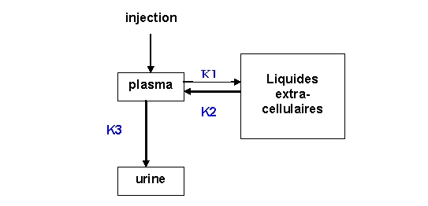

RÉSUMÉ DES CARACTÉRISTIQUES DU PRODUIT
ANSM - Mis à jour le : 19/03/2010
Ca-DTPA 250 mg/mL, solution injectable
2. COMPOSITION QUALITATIVE ET QUANTITATIVE
Pentétate de calcium trisodique ......................................................................................................... 250 mg
Pour 1 mL.
1 ampoule de 4 mL contient 1 g de pentétate de calcium trisodique.
Pour la liste complète des excipients, voir rubrique 6.1.
Solution injectable.
Solution limpide, incolore à jaune
pH: 7,3 à 7,7.
4.1. Indications thérapeutiques
Ca-DTPA 250 mg/mL, solution injectable est utilisé localement dans le traitement des plaies contaminées par les radionucléides des éléments suivants: le plutonium, l'américium, le curium, le fer et le cobalt, pour favoriser leur élimination. Ce médicament est également utilisé par voie intraveineuse dans un but thérapeutique en cas d'autres voies de pénétration ou d'incorporation, ou dans un but de recueil pour diagnostic en cas de suspicion de contamination interne.
4.2. Posologie et mode d'administration
Le traitement agit par chélation et est d'autant plus efficace qu'il est administré précocement. Le traitement doit être débuté dès que possible après toute contamination, même si elle n'est que suspectée. Cependant, même si le traitement ne peut être initié dès la contamination, il doit être effectué dès que possible; les résultats des examens de radiotoxicologie urinaire guident ensuite la poursuite du traitement.
· Voie intraveineuse:
o la posologie recommandée chez l'adulte et chez l'adolescent est de 0,5 g par jour, (soit ½ ampoule), sans dépasser 1 g par jour.
o chez les enfants de moins de 12 ans, la posologie est déterminée en fonction de la masse corporelle (14 mg/kg) sans dépasser 0,5 g par jour.
o en cas de nécessité de traitement prolongé, le schéma suivant peut être proposé:
§ 1 injection par jour pendant 3 à 5 jours
§ 2 à 3 injections par semaine pendant 3 semaines
§ 1 injection par semaine pendant 3 mois
§ à poursuivre au delà de 3 mois, en fonction des résultats de la mesure de l'excrétion urinaire. La posologie peut alors être réduite à 0,25 g par jour.
· Voie cutanée:
En traitement local, cette voie peut être utilisée en complément de la voie IV:
o une à plusieurs ampoules versées directement sur la peau saine, en associant les autres méthodes de décontamination.
o une à plusieurs ampoules sur les plaies contaminées.
Mode d'administration
La voie injectable est uniquement pour administration intra veineuse. Le Ca-DTPA 250 mg/mL, solution injectable doit être administré en injection intra-veineuse lente ou par perfusion d'un quart d'heure environ, en diluant le traitement dans 100 à 200 mL de solution saline ou de glucose à 50 g/L.
Réaction allergique lors d'une précédente injection.
Hypersensibilité à la substance active ou à l'un des excipients.
4.4. Mises en garde spéciales et précautions d'emploi
Mises en garde spéciales
Le Ca-DTPA 250 mg/mL, solution injectable est un agent chélateur qui peut entraîner la déplétion de métaux endogènes présents dans l'organisme à l'état de traces tels que zinc, manganèse, fer ou cobalt. Cette déplétion augmente avec la quantité de chélateur injectée et avec la fréquence des injections. Si le traitement par Ca-DTPA 250 mg/mL, solution injectable, est poursuivi, on associera éventuellement un apport de zinc, de façon concomitante et appropriée.
Précautions d'emploi
Chez les individus ayant subi une exposition interne par le plutonium, l'américium ou le curium, le Ca-DTPA augmente l'excrétion de la radioactivité dans les urines. Ces radionucléides sont connus pour être excrétés dans les urines, et les selles et passent dans le lait.
Durant le traitement, il convient:
· d'évaluer le niveau de contamination par des mesures pratiquées sur les urines, et éventuellement, les selles, le sang, et par anthroporadiamétrie.
· de surveiller les concentrations sériques et urinaires des électrolytes. Si l'individu reçoit un traitement prolongé par le Ca-DTPA 250 mg/mL, solution injectable, ces dosages doivent permettre de prévoir une éventuelle supplémentation minérale.
· d'enregistrer tout effet indésirable provenant de Ca-DTPA 250 mg/mL, solution injectable.
En cas de contamination majeure par les radionucléides, des précautions concernant les excrétas des patients doivent être mises en œuvre, après avis d'une personne compétente en radioprotection.
4.5. Interactions avec d'autres médicaments et autres formes d'interactions
Aucune étude d'interaction n'a été réalisée.
En cas de contamination concomitante par des radionucléides de l'iode ou du césium, le traitement par voie orale par iodure de potassium ou sel de ferrocyanure peut être également mis en route.
Les données nécessaires à l'évaluation du risque de la prise du Ca-DTPA 250 mg/mL, solution injectable, sur le développement fœtal ne sont pas disponibles. C'est pourquoi, hormis les cas de contamination importante et avérée, le traitement n'est pas recommandé durant la grossesse.
Les études pour évaluer l'excrétion du Ca-DTPA dans le lait n'ont pas été conduites.
Il convient chez la femme allaitant d'interrompre l'allaitement dès la suspicion de contamination, qu'elle ait ou non reçu le traitement.
4.7. Effets sur l'aptitude à conduire des véhicules et à utiliser des machines
Sans objet.
De rares effets indésirables non spécifiques ont été décrits dans la littérature:
· céphalées, nausées, vomissements, diarrhées, fièvre, prurit, crampes musculaires,
· réaction au site d'injection.
Ces symptômes diminueraient au cours du traitement.
Une réaction allergique peut également avoir lieu qui contre indique la poursuite du traitement.
Aucun cas de surdosage n'a été rapporté.
5. PROPRIETES PHARMACOLOGIQUES
5.1. Propriétés pharmacodynamiques
Depuis plus de 40 ans, la forme injectable du Ca-DTPA est utilisée dans la prise en charge médicale d'une exposition interne (par inhalation accidentelle, par passage cutané ou plus rarement par ingestion) par les radionucléides transuraniens sous forme soluble (transférable), principalement le plutonium, l'américium ou le curium. Les autres radionucléides transuraniens ont une demi-vie beaucoup plus courte et sont plus rares (californium, einsteinium, fermium, mendélévium…). Ca-DTPA favorise l'excrétion urinaire des radionucléides du plutonium, américium et curium. Ce traitement n'est pas efficace à la suite d'une contamination par l'uranium ou le neptunium, pour des raisons en partie biocinétiques.
Classe pharmacothérapeutique: antidote,
Code ATC: V03AB.
Le Ca-DTPA forme des chélates stables avec les ions métalliques par échange avec les ions calcium, formant ainsi des complexes plus stables.
Le Ca-DTPA a une forte affinité pour certains éléments transuraniens comme le plutonium (valence IV), l'américium (valence III) et le curium (valence III).
Le Ca-DTPA est donc utilisé pour augmenter leur élimination spontanée. Lors d'une intoxication par un radionucléide, les chélates ainsi formés sont éliminés par filtration glomérulaire dans l'urine.
Le Ca-DTPA est efficace pour des formes solubles de plutonium comme le nitrate ou le chlorure mais très peu efficace pour des formes insolubles comme les oxydes ou les complexes organiques type TBP (tributylphosphate).
Le Ca-DTPA complexe également les métaux de transition, tels que le fer, le cobalt et le zinc.
Dans son action de complexation, le Ca-DTPA se trouve, en milieu biologique, en compétition avec des complexants endogènes du plutonium tels que la transferrine et les acides organiques (carbonates, citrates). Le Ca-DTPA n'agit pas sur les agrégats que le plutonium (IV) forme par hydrolyse dans le sang.
Les connaissances acquises conduisent à employer, le plus tôt possible après une contamination, un excès volontaire de Ca-DTPA pour en obtenir une concentration suffisante dans le sang, face aux enchaînements métaboliques multiples de cette phase.
Au cours de son séjour dans l'organisme, le Ca-DTPA n'est pas métabolisé et est excrété tel quel (Durbin 1989).
5.2. Propriétés pharmacocinétiques
· Propriétés pharmacocinétiques du plutonium
o La disponibilité plasmatique du plutonium diminue assez rapidement selon une somme d'exponentielles; une partie importante correspond à la charge des organes cibles (squelette, foie), avec des périodes biologiques de l'ordre de 20 minutes et de 24 heures. C'est pourquoi la chélation est d'autant plus efficace qu'elle est commencée tôt après la contamination par le radionucléide, avant que celui-ci soit réparti dans les tissus cibles. La répartition décrite initialement pour ces deux organes a été révisée récemment (Leggett 2003) avec 60% pour le foie et 30 % pour le squelette.
· Propriétés pharmacocinétiques du Ca-DTPA
Le Ca-DTPA est très faiblement absorbé par voie orale. Chez l'animal, l'absorption intestinale est d'environ 5% (FDA, 2004)
Le Ca-DTPA se répartit rapidement dans les fluides extracellulaires. Il ne traverse pas les membranes cellulaires; la chélation intervient donc principalement dans le sang.
De plus, la période biologique du Ca-DTPA est courte, au bout de 12 heures après son administration, il est presque entièrement excrété (Gusev I.A. et al, 2001 - REAC/TS, 2002), plus de 95% de la dose injectée est excrétée en moins de 6 h (Durbin et al., 1989). Une étude sur deux volontaires sains a permis de mettre en évidence qu'en 24 heures plus de 99% du Ca-DTPA injecté est excrété dans les urines et moins de 0,5% reste dans le plasma (Stather, 1983).
Cette même étude s'est appliquée à déterminer la rétention corporelle du Ca-DTPA-(14C). La rétention plasmatique a été suivie jusqu'à 7 heures après injection intraveineuse, elle est décrite par la somme de 3 exponentielles dont les périodes biologiques sont: 1,4 minutes, 14,3 minutes et 95 minutes. Les fractions concernées correspondent respectivement à 60, 20 et 20 % environ de la quantité injectée initialement.
Modèle pharmacocinétique
Le comportement du CA-DTPA dans l'organisme, après injection intraveineuse, peut être décrit par le modèle compartimental suivant avec les taux de transfert K1, K2 et K3.

Modèle compartimental du comportement du 14CA-DTPA après injection IV (figure 1).
Sur les données humaines précédentes, la modélisation conduit aux taux de transfert du plasma vers les liquides extracellulaires LEC (K1) et des LEC vers le plasma (K2); ils sont très courts avec des périodes biologiques respectives de 2,5 et 6,3 minutes. La demi-vie de clairance plasmatique du CA-DTPA (K3) est de 19 minutes environ, similaire à celle de l'inuline (17 minutes) ce qui est en faveur d'une excrétion par filtration glomérulaire (figure 1).
La clairance du Ca-DTPA à partir du plasma, dans les premières heures est le reflet non seulement de l'excrétion urinaire mais aussi indicative d'un transfert important du plasma dans les liquides extracellulaires rapidement après l'injection (CDER/FDA, 2004).
· Propriétés pharmacocinétiques du complexe Pu-DTPA
o L'élimination urinaire du complexe Pu-DTPA apparaît se dérouler de manière biphasique: une phase rapide pour 25% de la quantité produite, avec une période biologique de 12 heures et une phase lente pour la quantité restante avec une période de 7 jours (Jolly LJr, 1972).
La période biologique courte du Ca-DTPA et son action limitée au sang, ne permet donc pas de chélater le plutonium dès lors qu'il est fixé dans ses organes de dépôt. Ceci justifie une administration thérapeutique la plus précoce possible, avant la fixation du contaminant dans les organes de dépôt et par la suite la répétition éventuelle des injections pour piéger la fraction circulante du contaminant.
5.3. Données de sécurité préclinique
Les données relatives à la mutagenèse, la carcinogenèse et les effets sur la fertilité ne sont pas disponibles à ce jour.
Acide chlorhydrique, eau pour préparations injectables.
En l'absence d'études de compatibilité, ce médicament ne doit pas être mélangé avec d'autres médicaments.
3 ans
6.4. Précautions particulières de conservation
A conserver à une température ne dépassant pas 25°C.
Conserver les ampoules dans l'emballage extérieur.
6.5. Nature et contenu de l'emballage extérieur
4 mL en ampoule (verre incolore de type I). Boîte de 10.
6.6. Précautions particulières d’élimination et de manipulation
Tout produit non utilisé ou déchet doit être éliminé conformément à la réglementation en vigueur.
7. TITULAIRE DE L’AUTORISATION DE MISE SUR LE MARCHE
PHARMACIE CENTRALE DES ARMEES
TSA 30004
45404 FLEURY LES AUBRAIS Cedex
8. NUMERO(S) D’AUTORISATION DE MISE SUR LE MARCHE
· 571 438-8 ou 34009 571 438 8 6: 4 mL en ampoule (verre). Boîte de 10.
9. DATE DE PREMIERE AUTORISATION/DE RENOUVELLEMENT DE L’AUTORISATION
[à compléter par le titulaire]
10. DATE DE MISE A JOUR DU TEXTE
[à compléter par le titulaire]
Sans objet.
12. INSTRUCTIONS POUR LA PREPARATION DES RADIOPHARMACEUTIQUES
Sans objet.
Liste I.